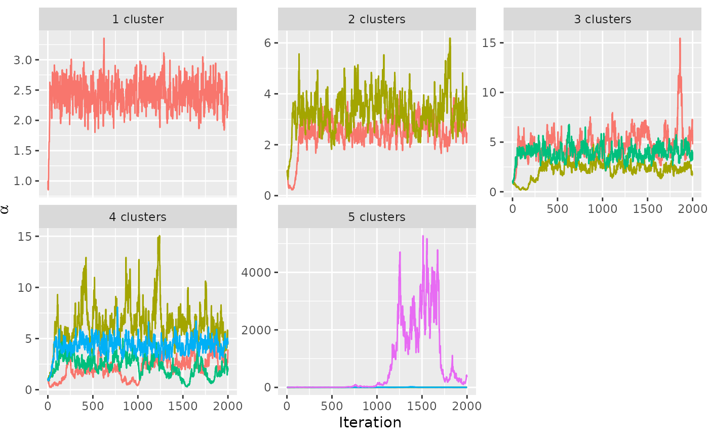
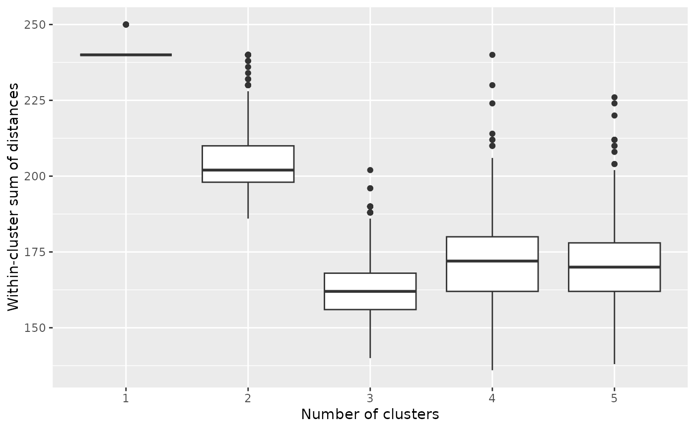
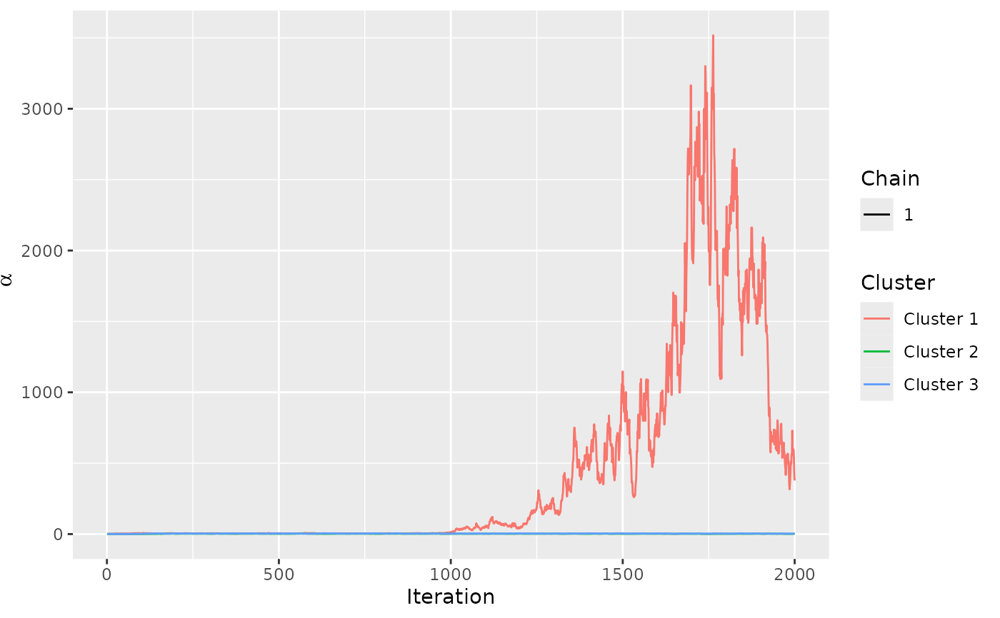
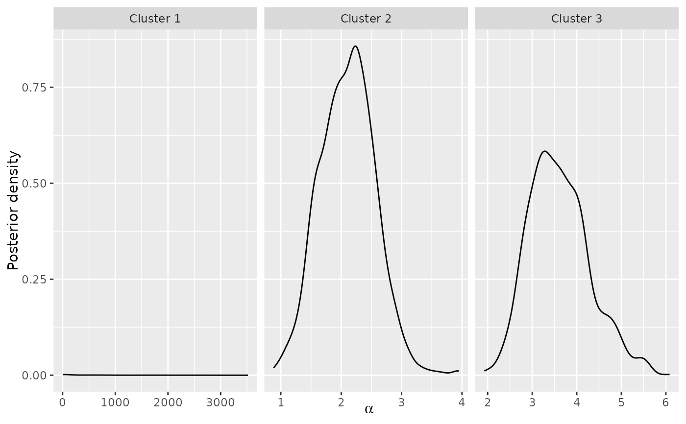
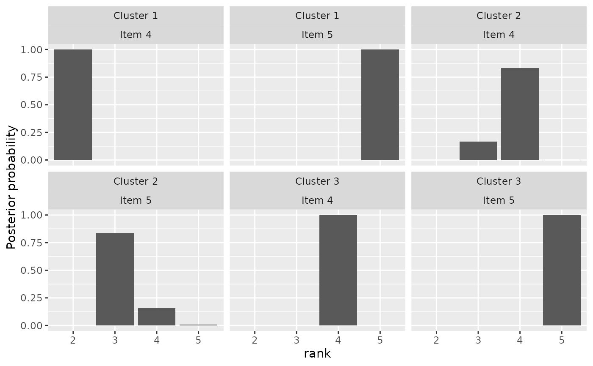
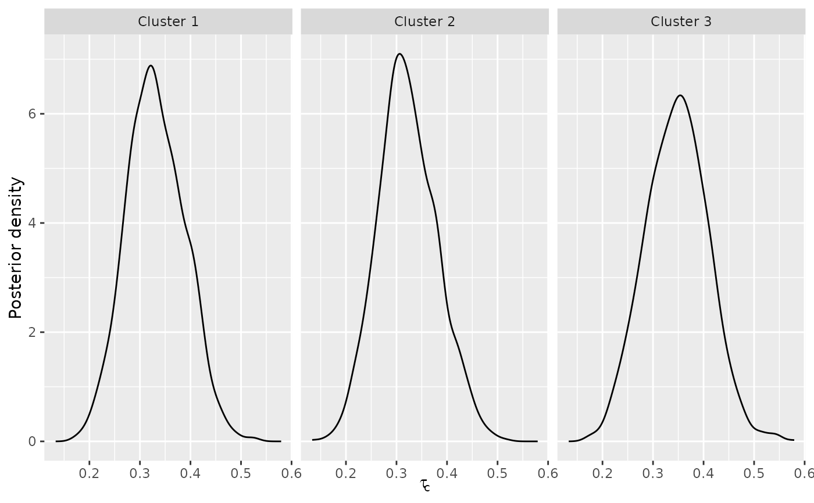
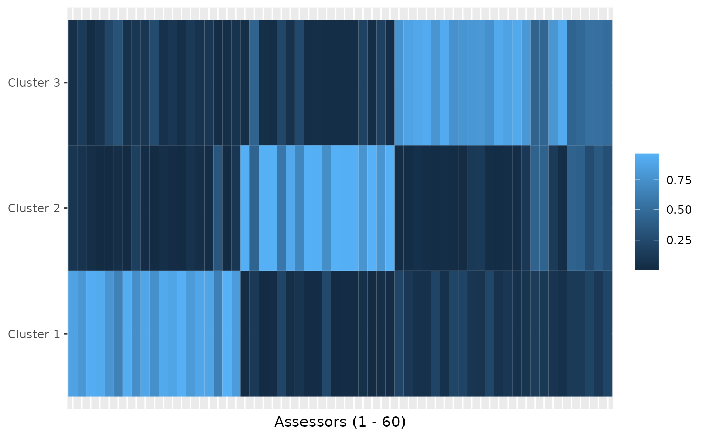

Plot the within-cluster sum of distances from the corresponding cluster consensus for different number of clusters. This function is useful for selecting the number of mixture.
Arguments
- ...
One or more objects returned from
compute_mallows(), separated by comma, or a list of such objects. Typically, each object has been run with a different number of mixtures, as specified in then_clustersargument tocompute_mallows(). Alternatively an object returned fromcompute_mallows_mixtures().
Value
A boxplot with the number of clusters on the horizontal axis and the with-cluster sum of distances on the vertical axis.
See also
Other posterior quantities:
assign_cluster(),
compute_consensus(),
compute_posterior_intervals(),
get_acceptance_ratios(),
heat_plot(),
plot.BayesMallows(),
plot.SMCMallows(),
plot_top_k(),
predict_top_k(),
print.BayesMallows()
Examples
# SIMULATED CLUSTER DATA
set.seed(1)
n_clusters <- seq(from = 1, to = 5)
models <- compute_mallows_mixtures(
n_clusters = n_clusters, data = setup_rank_data(cluster_data),
compute_options = set_compute_options(nmc = 2000, include_wcd = TRUE))
# There is good convergence for 1, 2, and 3 cluster, but not for 5.
# Also note that there seems to be label switching around the 7000th iteration
# for the 2-cluster solution.
assess_convergence(models)

# We can create an elbow plot, suggesting that there are three clusters, exactly
# as simulated.
burnin(models) <- 1000
plot_elbow(models)

# We now fit a model with three clusters
mixture_model <- compute_mallows(
data = setup_rank_data(cluster_data),
model_options = set_model_options(n_clusters = 3),
compute_options = set_compute_options(nmc = 2000))
# The trace plot for this model looks good. It seems to converge quickly.
assess_convergence(mixture_model)

# We set the burnin to 500
burnin(mixture_model) <- 500
# We can now look at posterior quantities
# Posterior of scale parameter alpha
plot(mixture_model)

plot(mixture_model, parameter = "rho", items = 4:5)

# There is around 33 % probability of being in each cluster, in agreemeent
# with the data simulating mechanism
plot(mixture_model, parameter = "cluster_probs")

# We can also look at a cluster assignment plot
plot(mixture_model, parameter = "cluster_assignment")

# DETERMINING THE NUMBER OF CLUSTERS IN THE SUSHI EXAMPLE DATA
if (FALSE) { # \dontrun{
# Let us look at any number of clusters from 1 to 10
# We use the convenience function compute_mallows_mixtures
n_clusters <- seq(from = 1, to = 10)
models <- compute_mallows_mixtures(
n_clusters = n_clusters, data = setup_rank_data(sushi_rankings),
compute_options = set_compute_options(include_wcd = TRUE))
# models is a list in which each element is an object of class BayesMallows,
# returned from compute_mallows
# We can create an elbow plot
burnin(models) <- 1000
plot_elbow(models)
# We then select the number of cluster at a point where this plot has
# an "elbow", e.g., n_clusters = 5.
# Having chosen the number of clusters, we can now study the final model
# Rerun with 5 clusters
mixture_model <- compute_mallows(
rankings = sushi_rankings,
model_options = set_model_options(n_clusters = 5),
compute_options = set_compute_options(include_wcd = TRUE))
# Delete the models object to free some memory
rm(models)
# Set the burnin
burnin(mixture_model) <- 1000
# Plot the posterior distributions of alpha per cluster
plot(mixture_model)
# Compute the posterior interval of alpha per cluster
compute_posterior_intervals(mixture_model, parameter = "alpha")
# Plot the posterior distributions of cluster probabilities
plot(mixture_model, parameter = "cluster_probs")
# Plot the posterior probability of cluster assignment
plot(mixture_model, parameter = "cluster_assignment")
# Plot the posterior distribution of "tuna roll" in each cluster
plot(mixture_model, parameter = "rho", items = "tuna roll")
# Compute the cluster-wise CP consensus, and show one column per cluster
cp <- compute_consensus(mixture_model, type = "CP")
cp$cumprob <- NULL
stats::reshape(cp, direction = "wide", idvar = "ranking",
timevar = "cluster", varying = list(as.character(unique(cp$cluster))))
# Compute the MAP consensus, and show one column per cluster
map <- compute_consensus(mixture_model, type = "MAP")
map$probability <- NULL
stats::reshape(map, direction = "wide", idvar = "map_ranking",
timevar = "cluster", varying = list(as.character(unique(map$cluster))))
# RUNNING IN PARALLEL
# Computing Mallows models with different number of mixtures in parallel leads to
# considerably speedup
library(parallel)
cl <- makeCluster(detectCores() - 1)
n_clusters <- seq(from = 1, to = 10)
models <- compute_mallows_mixtures(
n_clusters = n_clusters,
rankings = sushi_rankings,
compute_options = set_compute_options(include_wcd = TRUE),
cl = cl)
stopCluster(cl)
} # }